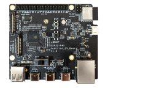

Explainer · ESPHome
ESP32-P4 explained for home builders: displays, cameras, voice and the C6 Wi-Fi problem
Espressif built its name on cheap chips with Wi-Fi baked in. So here's the twist: its most powerful chip yet, the ESP32-P4, has no Wi-Fi at all. No Bluetooth either.
That's not a mistake. The P4 is built for screens, cameras and audio. It leaves the radio to a little helper chip, usually an ESP32-C6. For ESPHome builders, it means wall panels and camera gadgets that older ESP32s simply couldn't drive.
What's inside
- Two RISC-V cores at up to 400 MHz, with AI instruction extensions and a floating-point unit, plus a low-power core at up to 40 MHz.
- 768 KB of on-chip SRAM, plus support for external PSRAM.
- MIPI-DSI display and MIPI-CSI camera inputs, both up to 1080p, with a built-in image signal processor.
- Hardware H.264 encoding at 1080p, 30 frames per second.
- 55 programmable GPIOs (Espressif says that's more than any previous chip of theirs), USB 2.0 High Speed and Ethernet.
Translation: a proper touchscreen and a proper camera, handled in hardware. The S3 could do small screens and basic cameras, but it had to sweat for it (our ESP32-C6 vs S3 comparison covers that generation).

The missing radio, solved
To get the P4 online you have three choices:
- Plug in a cable. The P4 has Ethernet, which is perfect for a wall panel near a network jack.
- Add a C6. ESPHome's esp32_hosted component runs the co-processor and talks to it over SDIO or SPI. The ESP32-C6 is the usual partner, and it brings Wi-Fi 6, Bluetooth and the 802.15.4 radio used by Thread.
- Add a C5 for 5 GHz Wi-Fi. Espressif sells a dev board built around that combo.
One fix to remember: if a P4 with a big LVGL touchscreen UI won't boot once Wi-Fi is on, the ESPHome docs point to use_psram: true in esp32_hosted. Without it, boot can fail with an sdio_mempool_create error.
ESP-NOW works too. Just add espnow:, and ESPHome forwards it to the co-processor. Small surprise: packets come from the C6's MAC address, not the P4's.
ESPHome support
ESPHome supports the chip as variant: esp32p4 on the esp32 platform. Two details:
- Early silicon. Boards with engineering-sample chips (revision below 3.0) need
engineering_sample: true. Newer boards don't. - CPU speed. Valid settings are 40, 360 or 400 MHz. Engineering samples top out at 360.
New to ESPHome? Start with our ESPHome guide and the ESP32 projects list.
Boards to look at
Espressif's own dev kits include the ESP32-P4X-Function-EV-Board, an ESP32-P4X-C5-Function-EV-Board variant with the C5 radio, and the ESP32-P4X-EYE camera board (docs). Waveshare and M5Stack also make P4 boards. See ESP32-P4 boards on Amazon.

Should you build with it?
Yes, if your project is a screen, a camera or a voice gadget: a wall dashboard, a doorbell-style camera, an intercom. No, if it's a sensor, a switch or anything on a battery. A C6, C3 or S3 is the better fit there, and putting a P4 in a mailbox sensor is like hiring a film crew to take a passport photo.
- Primary sources
- Espressif ESP32-P4 product page; ESPHome esp32 component documentation; ESPHome esp32_hosted documentation; Espressif devkits
As an Amazon Associate, HA News earns from qualifying purchases.
Assisted by AI (Hermes). Facts sourced from the Espressif product and devkit pages and ESPHome documentation linked above; review welcome.